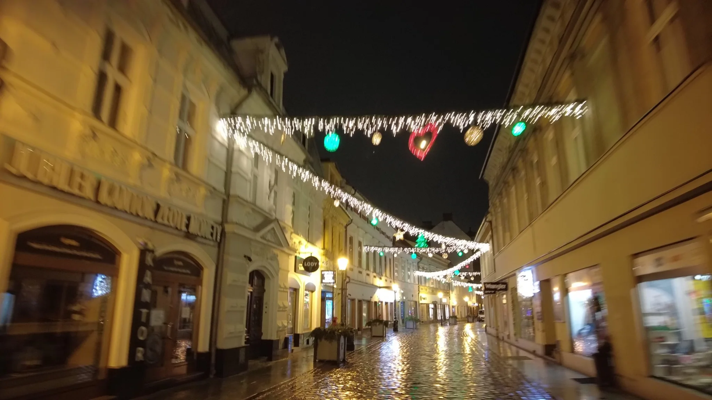
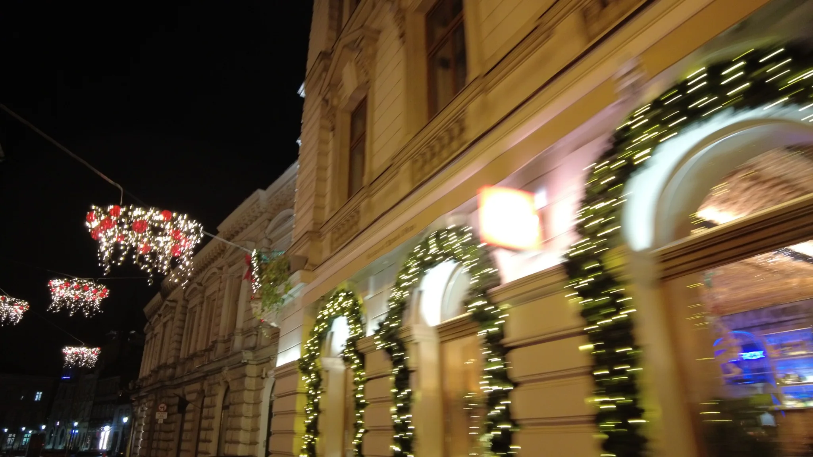
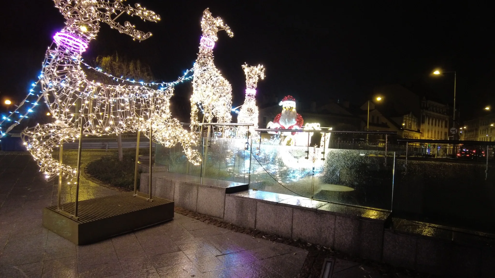

Świąteczny czas w Bielsku-Białej: mój spacer wśród świateł
Światła nad zaułkami, promienna choinka i Reksio w świątecznym stroju: moje osobiste świąteczne chwile z Bielsko-Białej.
Cześć, tu Justine z Tussy Van! Niektóre zdjęcia z podróży natychmiast przenoszą cię do chwili. Na moich świątecznych zdjęciach z Bielsko-Białej są to światła: wysoko ponad zaułkami, wokół okien i odbijające się na mokrym chodniku. To właśnie tę ciepłą, świąteczną atmosferę chcę wam pokazać.

Gdy cała alejka się rozświetla
Na moich zdjęciach śnieg nie potrzebujesz, by poczuć świąteczny nastrój. Podłoga lśni po deszczu, a światło odbija się między starymi fasadami. Nad ulicą wiszą jasne girlandy, pomiędzy nimi kolorowe kule. Dla mnie to najpiękniejsze zaproszenie, by zwolnić, zatrzymać się i spojrzeć w górę dla odmiany.
To, co naprawdę lubię w BB, to ta mieszanka: miasto ma własną architekturę i własne codzienne życie, a w okresie świątecznym to ciepłe światło opada na nie. Nie musi być wielki program na każdym rogu. Nawet ścieżka przez ozdobione ulice staje się prawdziwym doświadczeniem.


Choinka, która przemienia plac
Duże drzewo z czerwono-białymi motywami to jedno z moich ulubionych zdjęć tego wieczoru. Poniżej świecą paczki prezentowe, a nad nimi blask sięga aż do góry. Dookoła domy stoją w ciemności, a kolory odbijają się na placu. Takie chwile sprawiają, że zimowa wizyta jest dla mnie wyjątkowa: patrzysz na znajomą przestrzeń miejską i nagle doświadczasz jej w zupełnie inny sposób.

Renifery, Święty Mikołaj i rozświetlony Reksio
Świąteczne motywy podczas mojego spaceru to także duży renifer z sańkami oraz radosny pies z kapeluszem świątecznym. Reksio idealnie pasuje do Bielsko-Białej i jej animowanej fabuły. Oczywiście, musiało to być zdjęcie pamiątkowe — z moją różową czapką w blasku świateł.


Moja wskazówka na świąteczną wizytę
Spacer rozpoczęłabym jeszcze za dnia i zostawiła sobie czas aż do wieczora. Najpierw domy i place, potem przerwa na rozgrzanie się, a na koniec ponowne przejście rozświetlonymi ulicami. Wygodne, odporne na pogodę buty i spokojny plan pomagają w pełni poczuć tę atmosferę.
Moje zdjęcia to wspomnienia z podróży z grudnia 2023 roku. Podczas tej wizyty prezentują dekoracje; Konfiguracja, oświetlenie i wydarzenia mogą wyglądać inaczej w innych latach. Na wizytę aktualny program kulturalny znajdziesz pod adresem oficjalna strona Bielsko-Biała.
Odkryj Bielsko-Białą także za dnia
Jeśli zostaniesz dłużej, znajdziesz w mojej Raport podróżny do Bielsko-Białej stare miasto, muzea, centrum animacji organicznej oraz pomysły na Beskidy. Dlaczego BB to także moja wskazówka dotycząca Polski z Targów Lipska, możesz przeczytać w wkład na targi.
Dla mnie Bielsko-Biała to szczególnie piękna propozycja Polski w okresie świątecznym: ze względu na ciepłe światła, drobne odkrycia po drodze i radość, która towarzyszy takim zdjęciom z podróży.
Do zobaczenia wkrótce i życzę udanej podróży,
twoja nazwa Tussy